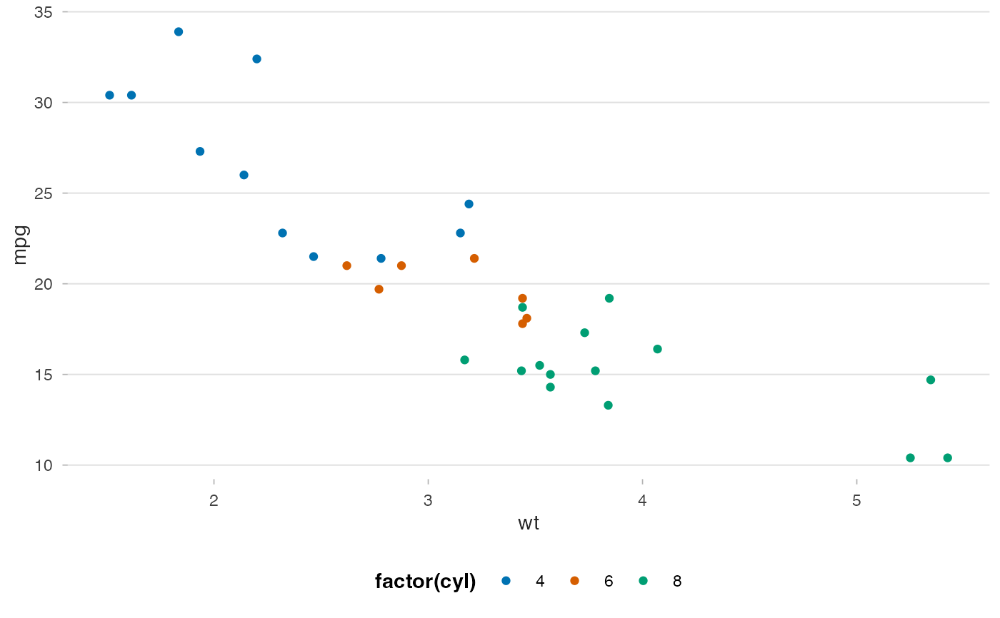

Theme and colour palette of the package's plots
lm_theme.Rdlm_theme() is the ggplot2 theme used by every plot of the package: a light,
ggplot2::theme_minimal()-based theme with horizontal grid lines only, bold
left-aligned facet labels and the legend at the bottom. lm_palette() returns the
colour-blind-safe Okabe-Ito colours in the order the package uses them for classes
(blue, vermilion, bluish green, reddish purple, orange, sky blue, yellow, black).
Usage
lm_theme(
base_size = 11,
base_family = "",
legend.position = "bottom",
grid = c("y", "x", "xy", "none")
)
lm_palette(n = NULL)Arguments
- base_size
Base font size in points.
- base_family
Base font family (
"": the device default).- legend.position
Position of the legend (
"bottom","right","top","left"or"none").- grid
Major grid lines to draw:
"y"(horizontal, the default),"x","xy"or"none".- n
Number of colours.
NULLreturns the eight Okabe-Ito colours; more than eight colours are taken fromgrDevices::hcl.colors()(palette"Dark 3").
Value
lm_theme(): a ggplot2 theme object, to be added to a plot with +.
lm_palette(): a character vector of hex colours.
References
Okabe, M., & Ito, K. (2008). Color universal design (CUD): How to make figures and presentations that are friendly to colorblind people. https://jfly.uni-koeln.de/color/
Examples
lm_palette(3)
#> [1] "#0072B2" "#D55E00" "#009E73"
library(ggplot2)
ggplot(mtcars, aes(wt, mpg, colour = factor(cyl))) +
geom_point() +
scale_colour_manual(values = lm_palette()) +
lm_theme()
